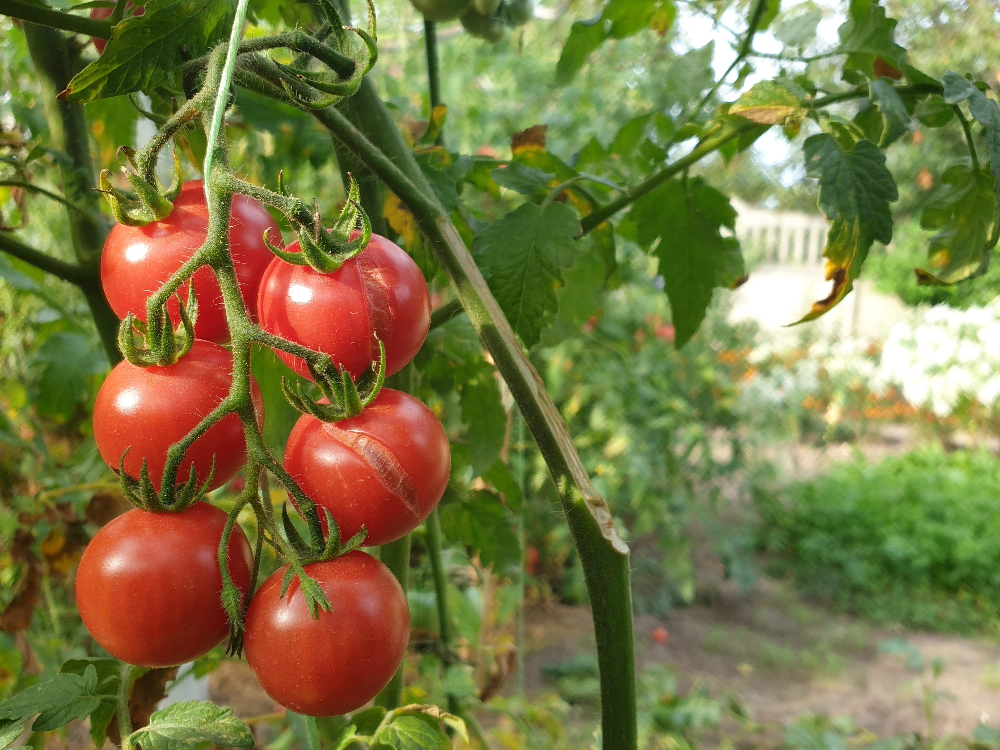
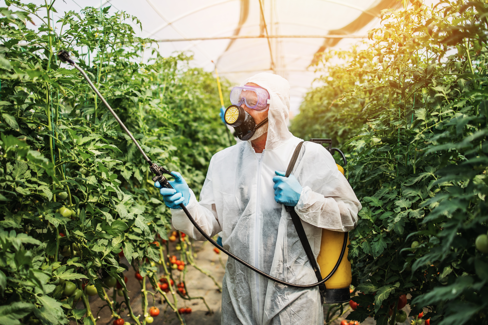
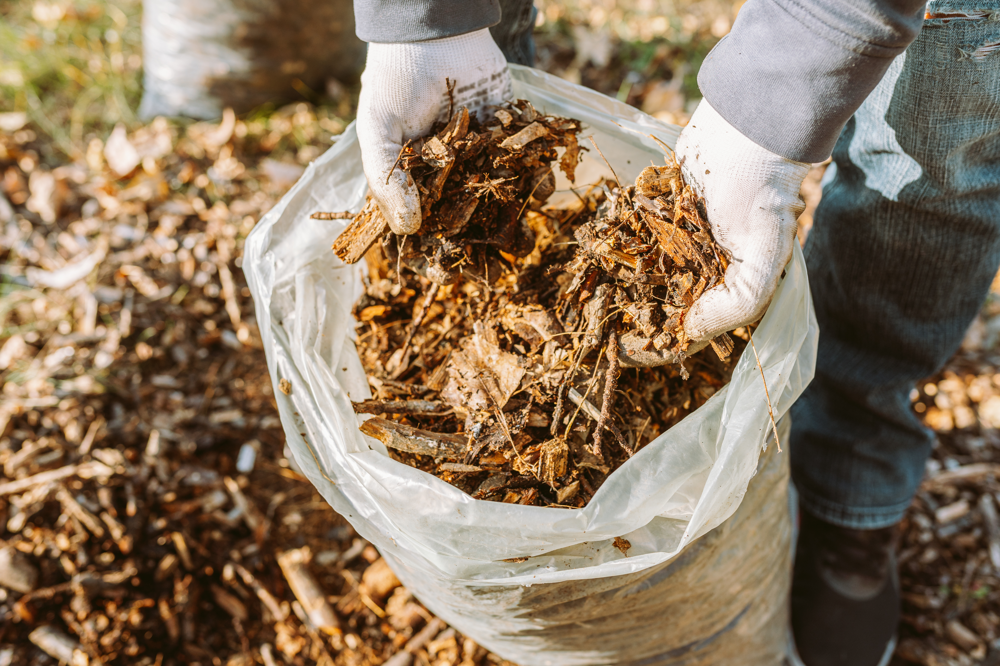
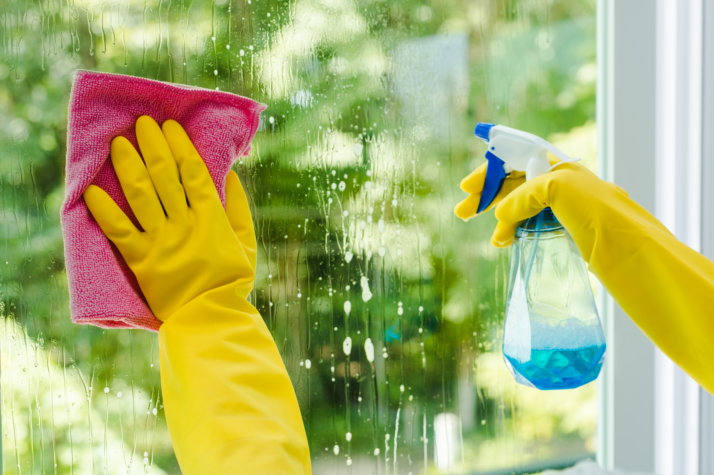

The Dangers of Tomato Diseases
Tomato plants, especially when grown in organic systems,
can be susceptiable to various diseases that can destroy the crop.
Examples are included below:
Common Tomato Fungal Diseases
Necrotic rings on tomato leaves

Early Blight
Water soaked chlorotic spots that progress to necrotic lesions

Late Blight
Brown lesions on tomato leaves with visible black pycnidia

Septoria Leaf Spot
Patches of white to olive green mold on the backside of a tomato leaf

Leaf Mold
Patches of grey/brown fungal structures

Gray Mold
Patches of white fungal growth on the top of tomato leaves

Powdery Mildew
Effects of Disease

Tomato diseases destroy 20-30% of tomato crop yield
in the United States every year. Above are some of the
worst fungal pathogens that tomato farmers face. Be sure to look
out for the symptoms depicted on this webpage so you can avoid adding
to the destoryed crop statistic. If you do find these symptoms, below
showcases some management practices to combat disease.
Management Practices

One of the most common methods to combat diseases in tomato crops is through apply pesticides.
These can be conventical chemicals, copper pesticides, or even biocontrols depending on regulations
for the farming system. While these are the most common (and typically most effective) there can be
serious environmental impacts with prolonged use.

A common method for preventing diseases, especially in farm systems that crop tomatoes year after
year, is to clean up all crop debris after the season has ended. Many pathogens, including the ones mentioned
above can overwinter on these debris. So removing it can dramatically decrease risk of repeated infections year
after year.

Using esistant varieties is becoming an increasingly popular management stategy. This means planting tomatoes that
are less likely to get infected or will be impacted less if they are infected. In the organic tomato industry, however,
this stratey is still relatively unpopular because resistant varieties tend to have lower taste quality. There are currently
breeding programs trying to combat this issue. See TOMI Project.

If growing in high tunnels or greenhouses, a common (but tedious) management method is to clean the entire structure after
a growing season. This can prevent repeated infections from year to year and help keep initial inoculum levels down.